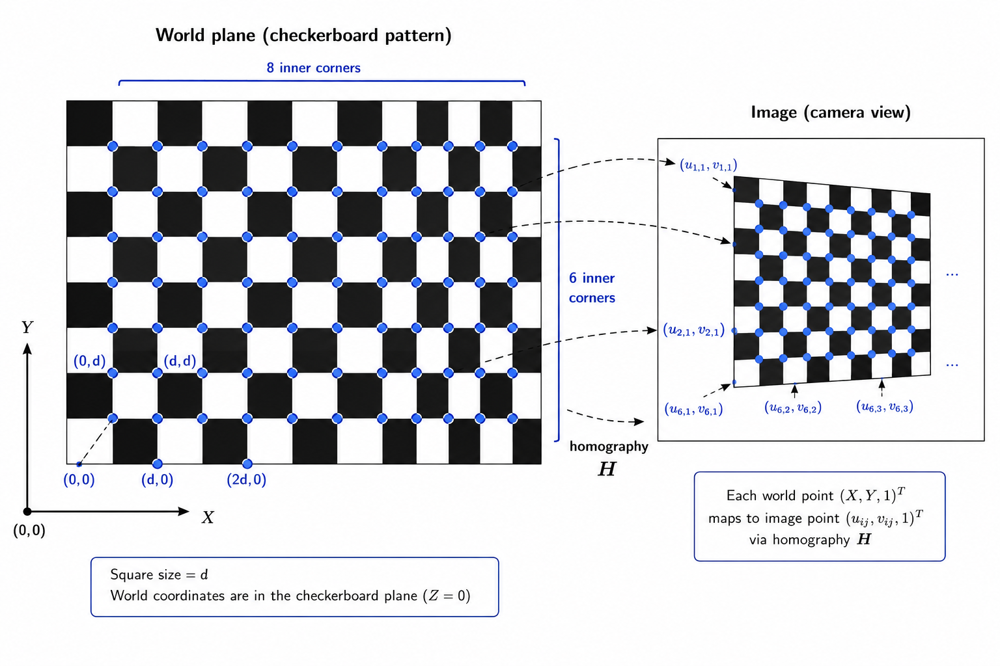
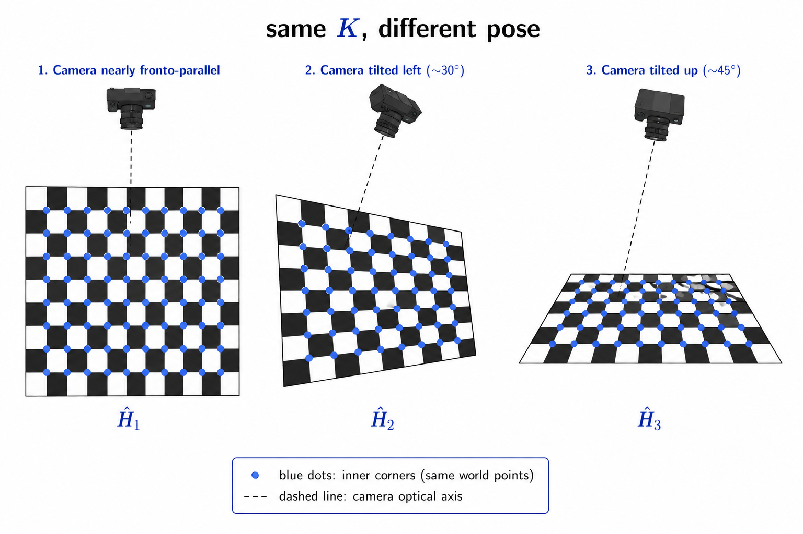
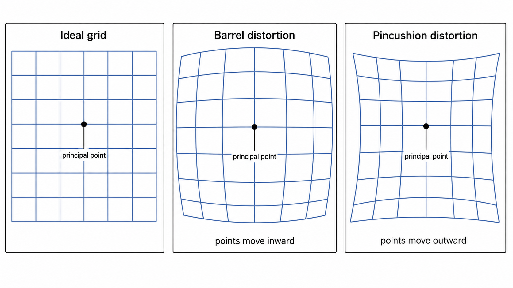

3D Computer Vision from First Principles — Part 6
Camera Calibration
Introduction
I have worked on computer vision applications for eight years. In that time, I heard the phrase “camera calibration” a few times but I never worried about it. I moved on — because most of what I actually worked on was solvable by deep learning models for image recognition and needed no knowledge about camera intrinsics.
I started this 3D computer vision series about three weeks ago. And now, six posts in, I think I understand what camera calibration actually is — and why it connects directly to everything we built in Part 5.
Part 5 showed that if you know \(\omega = K^{-\top}K^{-1}\), you know \(K\) — the intrinsic matrix of the camera. But it left one question open: how do you actually estimate \(\omega\) from images?
That is what this post answers. Photograph a flat pattern whose geometry is known, observe how the camera distorts it, and use those observations to infer \(K\). Because the pattern is planar, each image is related to the physical plane by a homography, and each homography carries Euclidean constraints on \(\omega\). Collect enough of them and \(K\) falls out.
Camera Calibration
What Is the Problem?
We have a physical camera. It has an intrinsic matrix:
\[K = \begin{pmatrix} f_x & s & p_x \\ 0 & f_y & p_y \\ 0 & 0 & 1 \end{pmatrix}\]
containing the focal lengths \(f_x, f_y\), the principal point \((p_x, p_y)\), and the skew \(s\). The full camera pipeline is:
\[\mathbf{x} = \phi\left(K\begin{bmatrix}R & \mathbf{t}\end{bmatrix} \tilde{\mathbf{X}}\right)\]
The rotation \(R\) and translation \(\mathbf{t}\) describe where the camera is and which way it is pointing — these change every time you move the camera. The intrinsic matrix \(K\) stays fixed as long as the internal camera settings do not change.
The calibration problem is:
Given image measurements of points whose geometry is known, estimate the intrinsic matrix \(K\).
For now, we focus on the ideal pinhole camera. Lens distortion comes later.
Restricting to a Planar Scene
Suppose the known points lie on a plane. We choose world coordinates so that this plane is \(Z = 0\). A point on the plane has coordinates:
\[\tilde{\mathbf{X}} = \begin{pmatrix} X \\ Y \\ 0 \\ 1 \end{pmatrix}\]
Writing \(R = [\mathbf{r}_1\ \mathbf{r}_2\ \mathbf{r}_3]\) and substituting:
\[\tilde{\mathbf{x}} = K\begin{bmatrix}\mathbf{r}_1 & \mathbf{r}_2 & \mathbf{r}_3 & \mathbf{t}\end{bmatrix}\begin{pmatrix} X \\ Y \\ 0 \\ 1 \end{pmatrix}\]
The third world coordinate is zero, so \(\mathbf{r}_3\) multiplies zero and disappears — exactly as in Part 4. What remains is:
\[\tilde{\mathbf{x}} = K\begin{bmatrix}\mathbf{r}_1 & \mathbf{r}_2 & \mathbf{t}\end{bmatrix}\begin{pmatrix} X \\ Y \\ 1 \end{pmatrix} = H\tilde{\mathbf{X}}_\pi\]
where \(\tilde{\mathbf{X}}_\pi = (X, Y, 1)^\top\) and:
\[\boxed{H = K\begin{bmatrix}\mathbf{r}_1 & \mathbf{r}_2 & \mathbf{t}\end{bmatrix}}\]
This is the homography from Part 4. Every image of a known plane gives us one homography. The calibration problem has now changed form:
Estimate one or more homographies from image correspondences, and use them to recover \(K\).
The Planar Calibration Target
To estimate a homography, we need several known points on the plane and their corresponding image locations.
A common choice is a flat checkerboard pattern — alternating dark and light squares. The useful features are not the squares themselves but the inner corners where four neighbouring squares meet. These are easy to detect automatically with subpixel accuracy, which is why the checkerboard has become the standard calibration target in practice.

Suppose each square has side length \(d\). Choose one inner corner as the origin and assign plane coordinates:
\[\mathbf{X}_{ij} = \begin{pmatrix} id \\ jd \end{pmatrix}, \qquad \tilde{\mathbf{X}}_{ij} = \begin{pmatrix} id \\ jd \\ 1 \end{pmatrix}\]
The camera observes each corner at image location \(\mathbf{x}_{ij} = (u_{ij}, v_{ij})^\top\). One image therefore gives a collection of correspondences:
\[\tilde{\mathbf{X}}_{ij} \longleftrightarrow \mathbf{x}_{ij}\]
These are used to estimate the homography \(\hat{H}\) via DLT, exactly as in Part 4. For estimating \(K\), the actual physical square size does not matter — we can set \(d = 1\). The physical size is only needed if we want the translation vector in real-world units.
By photographing the same pattern from \(m\) different poses, we get:
\[\hat{H}_1, \hat{H}_2, \ldots, \hat{H}_m\]
Each homography comes from a different camera position and orientation. But all of them share the same intrinsic matrix \(K\) — the camera did not change, only its pose did. This is the key idea.
But Wait — Can We Not Already Recover \(K\) from a Homography?
In Part 3, we estimated the full \(3 \times 4\) camera matrix \(\hat{P} = [\hat{M}\ \hat{\mathbf{p}}_4]\) where \(M = KR\). Since \(K\) is upper triangular and \(R\) is orthogonal, we could decompose \(M\) via RQ factorization to recover \(K\) and \(R\) separately.
Why not do the same for a planar homography?
Because the structure is different. The homography is:
\[H = K\begin{bmatrix}\mathbf{r}_1 & \mathbf{r}_2 & \mathbf{t} \end{bmatrix}\]
The matrix \([\mathbf{r}_1\ \mathbf{r}_2\ \mathbf{t}]\) is not a rotation matrix — its third column is the translation vector, not a rotation column. In general:
\[\begin{bmatrix}\mathbf{r}_1 & \mathbf{r}_2 & \mathbf{t}\end{bmatrix}^\top \begin{bmatrix}\mathbf{r}_1 & \mathbf{r}_2 & \mathbf{t}\end{bmatrix} \neq I\]
So we cannot simply RQ-decompose \(H\) and read off \(K\).
What we can use is the fact that \(\mathbf{r}_1\) and \(\mathbf{r}_2\) are columns of a rotation matrix, so they satisfy:
\[\mathbf{r}_1^\top\mathbf{r}_2 = 0 \qquad \text{(orthogonality)}\]
\[\|\mathbf{r}_1\|_2 = \|\mathbf{r}_2\|_2 = 1 \qquad \text{(unit norm)}\]
These two Euclidean constraints — one from orthogonality, one from equal norm — are what each homography contributes toward recovering \(K\). And as we will see next, they are not enough on their own.
Why Is One Homography Not Enough?
The homography is estimated from point correspondences, and as we know from Part 4, it is only determined up to a nonzero scale. If \(\hat{H}\) produces the correct image points, so does \(c\hat{H}\) for any \(c \neq 0\):
\[\phi(c\hat{H}\tilde{\mathbf{X}}_\pi) = \phi(\hat{H}\tilde{\mathbf{X}}_\pi)\]
So the estimated homography satisfies:
\[\hat{H} = cK\begin{bmatrix}\mathbf{r}_1 & \mathbf{r}_2 & \mathbf{t} \end{bmatrix}\]
for some unknown scalar \(c\). Looking at the first two columns:
\[\hat{\mathbf{h}}_1 = cK\mathbf{r}_1, \qquad \hat{\mathbf{h}}_2 = cK\mathbf{r}_2\]
Multiplying by \(K^{-1}\):
\[K^{-1}\hat{\mathbf{h}}_1 = c\mathbf{r}_1, \qquad K^{-1}\hat{\mathbf{h}}_2 = c\mathbf{r}_2\]
Now use the two Euclidean constraints on \(\mathbf{r}_1\) and \(\mathbf{r}_2\).
Constraint 1: orthogonality. Since \(\mathbf{r}_1^\top\mathbf{r}_2 = 0\):
\[(K^{-1}\hat{\mathbf{h}}_1)^\top(K^{-1}\hat{\mathbf{h}}_2) = c^2\mathbf{r}_1^\top\mathbf{r}_2 = 0\]
\[\boxed{\hat{\mathbf{h}}_1^\top K^{-\top}K^{-1}\hat{\mathbf{h}}_2 = 0 \qquad \Longrightarrow \qquad \hat{\mathbf{h}}_1^\top\omega\hat{\mathbf{h}}_2 = 0}\]
Constraint 2: equal norm. Since \(\|\mathbf{r}_1\| = \|\mathbf{r}_2\| = 1\), we have \(\|c\mathbf{r}_1\| = \|c\mathbf{r}_2\|\), so:
\[\|K^{-1}\hat{\mathbf{h}}_1\|^2 = \|K^{-1}\hat{\mathbf{h}}_2\|^2\]
\[\boxed{\hat{\mathbf{h}}_1^\top\omega\hat{\mathbf{h}}_1 - \hat{\mathbf{h}}_2^\top\omega\hat{\mathbf{h}}_2 = 0}\]
Two constraints per homography. This is where Part 5 pays off — \(\omega\) turns the Euclidean constraints buried inside the rotation matrix into linear equations on the unknown intrinsics.
Now count: \(\omega\) is symmetric with 6 entries, determined only up to scale, so it has 5 degrees of freedom. One homography gives 2 constraints. One image is not enough.
A second image from a different pose gives two more. A third gives two more. The intrinsic matrix \(K\) stays the same across all views — only the pose changes:
\[H_i = K\begin{bmatrix}\mathbf{r}_{1i} & \mathbf{r}_{2i} & \mathbf{t}_i \end{bmatrix}\]
Each view contributes two equations on the same \(\omega\). This is the central idea of planar camera calibration — move the camera (or the pattern), collect homographies, and let the shared \(\omega\) accumulate enough constraints to be determined.
With a general \(K\) (5 degrees of freedom), at least 3 views are needed. With additional constraints — for example, known square pixels (\(f_x = f_y\), \(s = 0\)) — fewer views suffice.
Combining Several Homographies
Suppose we have \(m\) views of the same plane, giving estimated homographies \(\hat{H}_1, \hat{H}_2, \ldots, \hat{H}_m\). Each view \(i\) contributes two constraints on \(\omega\):
\[\hat{\mathbf{h}}_{1i}^\top\omega\hat{\mathbf{h}}_{2i} = 0\]
\[\hat{\mathbf{h}}_{1i}^\top\omega\hat{\mathbf{h}}_{1i} - \hat{\mathbf{h}}_{2i}^\top\omega\hat{\mathbf{h}}_{2i} = 0\]
The rotation and translation are different for every view. The matrix \(\omega\) is the same — because the camera did not change.

The next step is to turn these constraints into a linear system in the unknown entries of \(\omega\). This is the same move we have made repeatedly in this series: geometry gives us homogeneous equations, and we stack them into a matrix system \(A\mathbf{x} = \mathbf{0}\).
Turning the Constraints into Linear Equations
Stack the six independent entries of \(\omega\) into a vector:
\[\mathbf{b} = (\omega_{11},\ \omega_{12},\ \omega_{22},\ \omega_{13},\ \omega_{23},\ \omega_{33})^\top \in \mathbb{R}^6\]
For any two vectors \(\mathbf{a}, \mathbf{c} \in \mathbb{R}^3\), the expression \(\mathbf{a}^\top\omega\mathbf{c}\) expands as:
\[\mathbf{a}^\top\omega\mathbf{c} = a_1c_1\omega_{11} + (a_1c_2 + a_2c_1)\omega_{12} + a_2c_2\omega_{22} + (a_1c_3 + a_3c_1)\omega_{13} + (a_2c_3 + a_3c_2)\omega_{23} + a_3c_3\omega_{33}\]
This looks quadratic in \(\mathbf{a}\) and \(\mathbf{c}\), but it is linear in the entries of \(\omega\). Define the vector:
\[\mathbf{v}(\mathbf{a}, \mathbf{c}) = \begin{pmatrix} a_1c_1 \\ a_1c_2 + a_2c_1 \\ a_2c_2 \\ a_1c_3 + a_3c_1 \\ a_2c_3 + a_3c_2 \\ a_3c_3 \end{pmatrix}\]
Then \(\mathbf{a}^\top\omega\mathbf{c} = \mathbf{v}(\mathbf{a}, \mathbf{c})^\top\mathbf{b}\).
The two constraints from view \(i\) become:
\[\mathbf{v}(\hat{\mathbf{h}}_{1i}, \hat{\mathbf{h}}_{2i})^\top\mathbf{b} = 0 \qquad \text{(orthogonality)}\]
\[\left[\mathbf{v}(\hat{\mathbf{h}}_{1i}, \hat{\mathbf{h}}_{1i}) - \mathbf{v}(\hat{\mathbf{h}}_{2i}, \hat{\mathbf{h}}_{2i})\right]^\top \mathbf{b} = 0 \qquad \text{(equal norm)}\]
Stack all \(m\) views into a \(2m \times 6\) matrix \(V\) and we get:
\[\boxed{V\mathbf{b} = \mathbf{0}}\]
The same null space pattern as every other estimation problem in this series — line intersection in Part 1, camera matrix in Part 3, homography in Part 4. And solving this linear system is easy, as we discuss below.
Solving for the Image of the Absolute Conic
We need \(\dim\text{Null}(V) = 1\), which requires \(\text{rank}(V) = 5\). Each view contributes two rows, so at least three views are needed in the general case (\(m \geq 3\)). With three views, \(V \in \mathbb{R}^{6 \times 6}\) and should have rank 5 — not 6 — because a nonzero null vector must exist.
In the noiseless case, \(\hat{\mathbf{b}}\) is the null vector of \(V\). In practice, image measurements are noisy, \(V\) has full numerical rank, and the exact null space is empty. We solve instead:
\[\min_{\|\mathbf{b}\|=1} \|V\mathbf{b}\|^2\]
As derived in Part 3, the solution is \(\hat{\mathbf{b}} = \mathbf{w}_6\) — the last right singular vector of \(V\), corresponding to its smallest singular value. In the noiseless case \(\sigma_6 = 0\) exactly; in the noisy case \(\sigma_6 > 0\) but \(\mathbf{w}_6\) gives the best approximate null direction.
Same null space pattern, same SVD solution. The only difference is the size of the matrix: \(2n \times 12\) in Part 3 for the camera matrix, \(2m \times 6\) here for \(\omega\).
Recovering \(\omega\) and \(K\)
Once \(\hat{\mathbf{b}}\) is found, reshape it into the symmetric matrix:
\[\hat{\omega} = \begin{pmatrix} \hat{b}_1 & \hat{b}_2 & \hat{b}_4 \\ \hat{b}_2 & \hat{b}_3 & \hat{b}_5 \\ \hat{b}_4 & \hat{b}_5 & \hat{b}_6 \end{pmatrix}\]
Since \(V\mathbf{b} = \mathbf{0}\) is homogeneous, \(\hat{\mathbf{b}}\) is only determined up to scale, so \(\hat{\omega} = \gamma\omega\) for some unknown scalar \(\gamma\). This scale ambiguity disappears when we normalize \(K\) at the end.
To recover \(K\), use \(\omega = K^{-\top}K^{-1}\), which gives \(\omega^{-1} = KK^\top\). Since \(K\) is upper triangular, \(K^\top\) is lower triangular, so \(\omega^{-1} = KK^\top\) is exactly the form produced by Cholesky factorization. Compute \(\omega^{-1} = LL^\top\) where \(L\) is lower triangular, then \(K = L^\top\).
Since \(\hat{\omega}\) is only known up to scale, normalize by setting \(K_{33} = 1\) and choose signs so that \(f_x > 0\), \(f_y > 0\).
Recovering the Pose of Each View
With \(K\) in hand, return to each homography separately. For view \(i\):
\[\hat{H}_i = c_i K\begin{bmatrix}\mathbf{r}_{1i} & \mathbf{r}_{2i} & \mathbf{t}_i\end{bmatrix}\]
Multiplying by \(K^{-1}\):
\[K^{-1}\hat{\mathbf{h}}_{1i} = c_i\mathbf{r}_{1i}, \qquad K^{-1}\hat{\mathbf{h}}_{2i} = c_i\mathbf{r}_{2i}, \qquad K^{-1}\hat{\mathbf{h}}_{3i} = c_i\mathbf{t}_i\]
Since \(\mathbf{r}_{1i}\) and \(\mathbf{r}_{2i}\) are unit vectors, estimate the scale from their average recovered length:
\[\lambda_i = \frac{2}{\|K^{-1}\hat{\mathbf{h}}_{1i}\| + \|K^{-1}\hat{\mathbf{h}}_{2i}\|}\]
Then:
\[\mathbf{r}_{1i} = \lambda_i K^{-1}\hat{\mathbf{h}}_{1i}, \qquad \mathbf{r}_{2i} = \lambda_i K^{-1}\hat{\mathbf{h}}_{2i}, \qquad \mathbf{t}_i = \lambda_i K^{-1}\hat{\mathbf{h}}_{3i}\]
The third rotation column comes from the cross product:
\[\mathbf{r}_{3i} = \mathbf{r}_{1i} \times \mathbf{r}_{2i}\]
giving the approximate rotation matrix \(\tilde{R}_i = [\mathbf{r}_{1i}\ \mathbf{r}_{2i}\ \mathbf{r}_{3i}]\). In exact arithmetic this would be a proper rotation. With noisy data it will only be approximately orthogonal — so we project it onto the nearest valid rotation matrix, which we discuss next.
Projecting onto the Nearest Rotation Matrix
With noisy data, \(\tilde{R}_i\) is only approximately orthogonal. We need to find the nearest valid rotation matrix — the closest matrix in \(SO(3)\), where:
\[SO(3) = \{Q \in \mathbb{R}^{3 \times 3} : Q^\top Q = I,\ \det(Q) = 1\}\]
\(SO(3)\) is the special orthogonal group — the set of all \(3 \times 3\) rotation matrices. The word special means \(\det = +1\); the word orthogonal means \(Q^\top Q = I\). You do not need to understand the word group here — it is just a name for this set.
We want to solve:
\[\min_{Q \in SO(3)} \|\tilde{R}_i - Q\|_F^2\]
Expanding the Frobenius norm:
\[\|\tilde{R}_i - Q\|_F^2 = \text{tr}(\tilde{R}_i^\top\tilde{R}_i) + \text{tr}(Q^\top Q) - 2\text{tr}(Q^\top\tilde{R}_i)\]
Since \(Q^\top Q = I\), the first two terms are constants. So minimizing the Frobenius distance is equivalent to maximizing:
\[\text{tr}(Q^\top\tilde{R}_i)\]
Let \(\tilde{R}_i = U_i\Sigma_i V_i^\top\) be the SVD. Define \(M_i = U_i^\top QV_i\), which is orthogonal since \(Q\), \(U_i\), \(V_i\) are all orthogonal. Then:
\[\text{tr}(Q^\top\tilde{R}_i) = \text{tr}(V_i^\top Q^\top U_i \Sigma_i) = \text{tr}(M_i^\top\Sigma_i) = \sum_j \sigma_{ji}(M_i)_{jj}\]
Since each diagonal entry of an orthogonal matrix satisfies \(|(M_i)_{jj}| \leq 1\), and \(\sigma_{ji} \geq 0\):
\[\text{tr}(M_i^\top\Sigma_i) \leq \sigma_{1i} + \sigma_{2i} + \sigma_{3i}\]
The bound is attained when \(M_i = I\), i.e. \(U_i^\top QV_i = I\), giving:
\[Q = U_iV_i^\top\]
If \(\det(U_iV_i^\top) = +1\): this is already a valid rotation matrix. Set \(R_i = U_iV_i^\top\).
If \(\det(U_iV_i^\top) = -1\): \(U_iV_i^\top\) is orthogonal but not a rotation (it is a reflection). Fix it by flipping the sign of the last singular vector. Define:
\[D_i = \begin{pmatrix} 1 & 0 & 0 \\ 0 & 1 & 0 \\ 0 & 0 & -1 \end{pmatrix}\]
and set \(R_i = U_i D_i V_i^\top\). Then \(R_i^\top R_i = I\) and:
\[\det(R_i) = \det(U_iV_i^\top)\det(D_i) = (-1)(-1) = +1\]
So \(R_i \in SO(3)\).
The final pose estimate for view \(i\) is \(R_i\), \(\mathbf{t}_i\).
Are We Done? Not Quite.
The procedure so far gives us estimates of \(K\), \(R_i\), \(\mathbf{t}_i\) through a sequence of linear steps:
\[\text{point correspondences} \longrightarrow \hat{H}_i \longrightarrow V\mathbf{b} = \mathbf{0} \longrightarrow \hat{\omega} \longrightarrow K\]
But we have been here before. In Part 3, DLT gave us a camera matrix that minimised the algebraic error \(\|A\mathbf{p}\|^2\) — not the geometric reprojection error. The same issue applies here.
What we actually care about is how accurately the estimated camera predicts the observed image points. The reprojection residual for point \(j\) in view \(i\) is:
\[\mathbf{e}_{ij} = \mathbf{x}_{ij} - \hat{\mathbf{x}}_{ij}, \qquad \hat{\mathbf{x}}_{ij} = \phi\left(K\begin{bmatrix}\mathbf{r}_{1i} & \mathbf{r}_{2i} & \mathbf{t}_i\end{bmatrix}\tilde{\mathbf{X}}_j\right)\]
The final estimates come from minimising the total reprojection error:
\[\min_{K,\{R_i,\mathbf{t}_i\}} \sum_{i=1}^m \sum_{j=1}^{n_i} \left\|\mathbf{x}_{ij} - \phi\left(K\begin{bmatrix}\mathbf{r}_{1i} & \mathbf{r}_{2i} & \mathbf{t}_i\end{bmatrix}\tilde{\mathbf{X}}_j\right) \right\|^2\]
This is nonlinear — Gauss-Newton or Levenberg-Marquardt handles it, initialised from the linear estimates above. The key difference from Part 3 is that here \(K\) is shared across all views while each view has its own \(R_i\), \(\mathbf{t}_i\). The optimisation adjusts one common intrinsic matrix together with \(m\) image-specific poses simultaneously.
A rotation matrix cannot be updated by changing its nine entries independently — it must continue to satisfy \(R^\top R = I\) and \(\det(R) = 1\). The set of all \(3 \times 3\) rotation matrices is \(SO(3)\), which is an example of a Lie group — a smooth geometric space with group structure. This allows us to describe a small change in rotation using only three parameters and convert it back to a valid rotation matrix. We will return to Lie groups later. For now, the point is simply that rotations must be updated carefully to preserve their geometric structure.
The complete pipeline is:
\[\boxed{\begin{aligned} \text{planar correspondences} &\longrightarrow \hat{H}_1, \ldots, \hat{H}_m \longrightarrow V\mathbf{b} = \mathbf{0} \longrightarrow \hat{\omega} \longrightarrow K \\ &\longrightarrow R_i, \mathbf{t}_i \longrightarrow \text{nonlinear reprojection refinement} \end{aligned}}\]
A flat plane, photographed from several different poses, contains enough Euclidean information to reveal the internal geometry of the camera. That surprised me a little, for sure.
This procedure — homographies from a planar pattern, constraints on \(\omega\), Cholesky to recover \(K\), nonlinear refinement — is known as Zhang’s calibration method, after Zhengyou Zhang who published it in 1999. It is the algorithm behind OpenCV’s calibrateCamera.
Why Does Camera Calibration Matter?
An uncalibrated camera is not yet a reliable measurement instrument. It can produce images, but the relationship between three-dimensional camera coordinates and image pixels is not fully known.
Without the intrinsic matrix, we do not know how focal length, pixel scaling, and the principal point determine the projection of a scene onto the image. Without a distortion model, the measured pixel locations may also deviate systematically from the ideal pinhole-camera model.
Calibration estimates these quantities and turns the camera into a known geometric sensor.
Once \(K\) and the distortion parameters are known:
- 3D reconstruction becomes possible when images from multiple viewpoints, their relative camera poses, and point correspondences are available
- Augmented reality can render virtual objects with perspective consistent with the real camera
- Stereo vision can use epipolar geometry, triangulation, and disparity to estimate depth. Stereo vision will be the topic of the upcoming posts of the series.
- Visual odometry and SLAM can use the correct camera projection model when estimating camera motion and scene structure
- Metrology and medical imaging can relate image measurements to physical geometry when the required scale and scene constraints are available
Next, we deal with a complication the ideal pinhole model ignores entirely: real lenses distort the image.
Lens Distortion
The camera matrix \(P = K[R \mid \mathbf{t}]\) describes an ideal pinhole camera — a mathematical abstraction. Real lenses are not ideal. They bend light in ways that the pinhole model does not capture, and the result is that straight lines in the world can appear curved in the image.
For a world point \(\mathbf{X}_w\), the pinhole model predicts an ideal pixel \(\mathbf{x} = (x, y)^\top\). A real lens records it at a slightly different location \(\mathbf{x}_d = (x_d, y_d)^\top\). Lens distortion models the map from \(\mathbf{x}\) to \(\mathbf{x}_d\).
Radial Distortion
The most important type is radial distortion. The optical axis intersects the image at the principal point \(\mathbf{p} = (p_x, p_y)^\top\). Let \(r = \|\mathbf{x} - \mathbf{p}\|\) be the distance of the ideal pixel from the principal point.
Radial distortion assumes that the ideal point, the distorted point, and the principal point all lie on the same ray from \(\mathbf{p}\). The lens only changes how far along that ray the point lands:
\[\boxed{\mathbf{x}_d = \mathbf{p} + L(r)(\mathbf{x} - \mathbf{p})}\]
where \(L(r)\) is a radial scale factor. A standard polynomial model is:
\[L(r) = 1 + k_1r^2 + k_2r^4 + k_3r^6\]
So:
\[x_d = p_x + (x - p_x)(1 + k_1r^2 + k_2r^4 + k_3r^6)\] \[y_d = p_y + (y - p_y)(1 + k_1r^2 + k_2r^4 + k_3r^6)\]
Near the principal point \(r \approx 0\), \(L(r) \approx 1\) and the distortion is negligible. It grows toward the image boundaries — which is why wide-angle lenses look fine in the center and distorted at the edges.
- \(L(r) = 1\): point does not move
- \(L(r) < 1\): point moves toward the principal point
- \(L(r) > 1\): point moves away from the principal point
Why Are the Odd Powers Missing from \(L(r)\)?
A natural question: why does \(L(r)\) contain only even powers of \(r\)?
Consider any line through the principal point. Let \(t\) be a signed coordinate along this line, with \(t = 0\) at the principal point. Let \(g(t)\) be the distorted position. Radial symmetry requires opposite points to remain opposite:
\[g(-t) = -g(t)\]
So \(g\) is an odd function. Its Taylor expansion contains only odd powers:
\[g(t) = t + k_1t^3 + k_2t^5 + k_3t^7 + \cdots\]
Factoring out \(t\):
\[g(t) = t\left(1 + k_1t^2 + k_2t^4 + k_3t^6 + \cdots\right)\]
The factor in parentheses is \(L(r)\) — and it contains only even powers because one factor of \(t\) has already been extracted. The full radial mapping has odd powers; the scale factor has even ones.
Barrel and Pincushion Distortion
Different points on a straight world line sit at different distances \(r\) from the principal point. They therefore receive different scale factors \(L(r_1), L(r_2), \ldots\) and are displaced by different amounts. A set of collinear points need not remain collinear after distortion. This is why straight lines appear curved.
Two common cases:
Barrel distortion (\(k_1 < 0\)): points are pushed inward toward the principal point. The image appears to bulge outward, like a barrel.
Pincushion distortion (\(k_1 > 0\)): points are pushed outward away from the principal point. The image appears to pinch inward at the center.

Lens distortion is nonlinear — it cannot be absorbed into the camera matrix \(P\). It must be modeled separately, which is why the distortion coefficients \(k_1, k_2, k_3\) are estimated alongside \(K\) in the nonlinear refinement step.
Putting It All Together
Now that we have a distortion model, we can fold it into the full calibration pipeline.
Start by initializing the distortion coefficients at zero:
\[k_1 = k_2 = k_3 = 0\]
This is sensible — the linear stage ignores distortion entirely, so zero is the right starting point.
Define the ideal pinhole projection for view \(i\):
\[\pi_i(\tilde{\mathbf{X}}_{w,j}) = \phi\left(K\begin{bmatrix}R_i & \mathbf{t}_i\end{bmatrix}\tilde{\mathbf{X}}_{w,j}\right)\]
and the distortion map:
\[D(\mathbf{x}) = \mathbf{p} + L(r)(\mathbf{x} - \mathbf{p}), \qquad r = \|\mathbf{x} - \mathbf{p}\|\]
The predicted distorted pixel is:
\[\boxed{\hat{\mathbf{x}}_{ij} = D(\pi_i(\tilde{\mathbf{X}}_{w,j}))}\]
Project first with the pinhole model, then apply the distortion. That ordering matters.
Refine everything jointly by minimising the total reprojection error over all corners and all views:
\[\min_{K,\{R_i,\mathbf{t}_i\},k_1,k_2,k_3} \sum_{i=1}^m \sum_{j=1}^{n_i} \left\|\mathbf{x}_{ij} - \hat{\mathbf{x}}_{ij} \right\|^2\]
This is nonlinear — Gauss-Newton or Levenberg-Marquardt, initialised from the linear estimates. As in Part 3, the linear stage minimises the wrong thing (algebraic error); the nonlinear stage fixes it by minimising what we actually care about (reprojection error).
The full Zhang’s method pipeline is:
\[\boxed{\begin{aligned} \text{checkerboard images} &\longrightarrow \text{corner correspondences} \longrightarrow \hat{H}_1, \ldots, \hat{H}_m \\ &\longrightarrow \hat{\omega} \longrightarrow K \\ &\longrightarrow R_i, \mathbf{t}_i \\ &\longrightarrow \text{joint refinement of } K, R_i, \mathbf{t}_i, k_1, k_2, k_3 \end{aligned}}\]
Conclusion
We began with the image of the absolute conic \(\omega = K^{-\top}K^{-1}\) from Part 5 and asked how to estimate it from actual images.
A planar calibration target gave us the missing link. Each image of the plane produced a homography, and the first two columns of that homography inherited the orthogonality and equal-norm constraints of the first two rotation columns. Expressed through \(\omega\), these became linear equations. Stack enough views, solve \(V\mathbf{b} = \mathbf{0}\) via SVD, reshape into \(\hat{\omega}\), and Cholesky gives \(K\).
With \(K\) known, each homography decomposes into a pose \((R_i, \mathbf{t}_i)\). Noisy data means the recovered rotations are only approximately valid, so we project each one onto \(SO(3)\) via SVD.
Finally, lens distortion was added to the model and all parameters were refined jointly by minimising the true reprojection error with Levenberg-Marquardt.
\[\boxed{\begin{aligned} &\text{checkerboard images} \\ &\quad\longrightarrow \text{corner correspondences} \\ &\quad\longrightarrow \hat{H}_1, \ldots, \hat{H}_m \\ &\quad\longrightarrow V\mathbf{b} = \mathbf{0} \longrightarrow \hat{\omega} \\ &\quad\longrightarrow K \\ &\quad\longrightarrow R_i, \mathbf{t}_i \\ &\quad\longrightarrow \text{joint nonlinear refinement of } K, R_i, \mathbf{t}_i, k_1, k_2, k_3 \end{aligned}}\]
What began as the abstract matrix \(\omega = K^{-\top}K^{-1}\) has now become something measurable. A flat checkerboard, photographed from several angles, is enough to recover the internal geometry of the camera. I find that remarkable — and I spent eight years not knowing it.
What Comes Next?
Calibration tells us how a single camera sees the world. The next question is what happens when the same scene is observed from two different positions — either by two cameras, or by the same camera moved to a new location.
It turns out that a point visible in both images cannot correspond to an arbitrary point in the second image. The geometry of the two cameras constrains its possible match to a single line. This constraint is the heart of epipolar geometry.
In Part 7, we will derive this constraint from the two camera matrices and arrive at:
\[\tilde{\mathbf{x}}_2^\top F\tilde{\mathbf{x}}_1 = 0\]
The matrix \(F\) is called the fundamental matrix. It encodes the relative geometry of the two cameras entirely in terms of image measurements — no 3D points needed, no calibration required. From \(F\) we will extract the essential matrix \(E\) for calibrated cameras, and from \(E\) we will begin to recover the 3D structure of the scene.
Stereo — depth from two calibrated cameras — follows naturally after that.